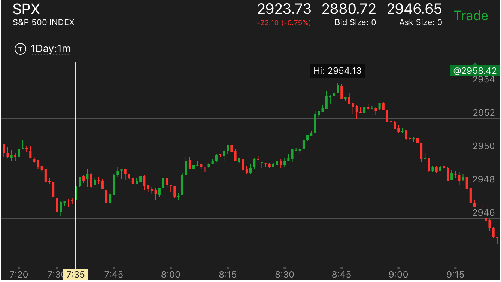

从高点快速下跌后，缓慢反弹，会超过高点，快速上涨也一样
- 下跌的速度非常重要，否则就成了下跌后，走平大跌走势。而且要注意整体分析。
如果是刚刚上涨，那么即使下跌速度很慢，也可能不是要跌的样子。
- 从最近的高点，快速下跌。这样的走势一定会反弹。不会是真实的下跌。一旦停止，
开始缓慢走高的时候，就应该做多。
- 一定要从比较高的点，甚至附近震荡的最高点。
- 同时也要判断它是否有有理由上涨，比如需要填空。或者需要新高。
- 下跌的时候，可能出现两段下跌，但是也可能就是一段。
- 如果是升势，这个会远远超过高点，继续上涨。而跌势则会稍微超过高点后，立刻下跌。
- 相反的方向也有一样的走势
从高点快速下跌后，缓慢上涨，超过高点。
从高点下跌后，区分是下跌后，走平大跌，还是下跌后，走平上涨
从高点下跌后，区分是下跌后，走平大跌，还是下跌后，走平上涨
TOP
这个有时候不好区分。可以等等。如果它是回调，那么就会缓慢上涨，超过前面高点。
如果是要大跌，那么走平结束后，会下跌。可以在下跌的时候做空。

图示：
1. 8：15的下跌，速度很快。而且分为两段。8：20的反弹，它一直没有超过两段走势的第二段。显得很弱。这样两者结合起来，表示一定会涨。而且超过前面的高点。
2. 8：45的下跌。它开始下跌速度比较快。但是很快就走平了。如果从8：30开始的升势考虑，它下跌的速度很慢。而且它并没有在真空附近回调。这里离真空还很远。
这样它下跌后，一定会低于8：30开始的下跌的。
从高点快速下跌后，缓慢上涨，超过高点。
TOP

图示：6:40 从高点快速下跌，然后反弹，超过高点。
7：00再次快速下跌。到达原来的低点后，再次反弹，这次远远超过了高点。
8：10出现了一个更低点顶部。大跌。跌速很快，8：30再次上涨。远远超过了高点。

图示：
1. 注意10：50和11：20的两个下跌。10：50的下跌，不是从高点下跌，反弹速度很快。所以回到原位。
11：20的下跌，先冲高，然后大跌，速度很快，然后立刻反弹，拉回，走平几分钟。这样就很慢。它一定会超过高点的。
从更大的走势看，它应该超过2932这个点填补真空，而且是缓慢上涨。所以两者结合，一定会涨的。
2. 12:30开始的下跌，也是从最高点下跌。分成两段走势。速度比较块。这样也一定会反弹。但是它反弹速度很快。一下超过了下跌高点。说明这个是最后的
上涨。未来要跌了。它勉强超过了下跌的高点后，大跌。

图示：7：40 从最高点，快速下跌。出现了两段下跌走势。而它反弹很慢。说明未来一定会超过下跌的高点。

图示：
1. 开盘后基本走平，然后直接冲高，冲高后，立刻下来。虽然它回调幅度不大。离填补真空还很远。但是这个立刻下来本身就说明
大盘没有到达顶部。
2. 它在底部走平后，稍微走高后，走平。说明它一定会超过高点，又处于升势。说明它会大涨。而不是创新高后下跌。
3. 7：00到7：50.它不断冲高，到了高点，总是立刻下来。一方面，说明它没有反转。一方面，它长时间走平，说明为了大涨而积累力量。
4. 从7：40到9：00，它不断的缓慢上涨，走平，继续上涨。它的走平的边缘没有明显的加速。非常的缓慢。说明不是上涨，走平就会反转的。要有一定的速度。
当然，这个力量的来源也在前面的震荡45分钟的才来的。不然就需要不断的回调填补真空了。

图示：开盘后，6：40出现了大涨。大涨后，它继续冲高。然后快速回调。走平很久。这个可以分析。它走势只有两段。
所以不一定反转。而它的边缘走势是快速回调，速度超过了第二段下跌。说明还是处于升势。它长时间走平后，开始上涨，它的上涨虽然速度很快。但是立刻回调。
总的来看。速度并不快。